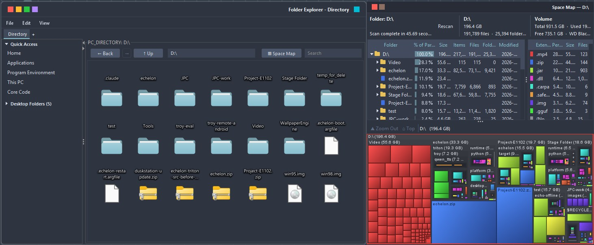
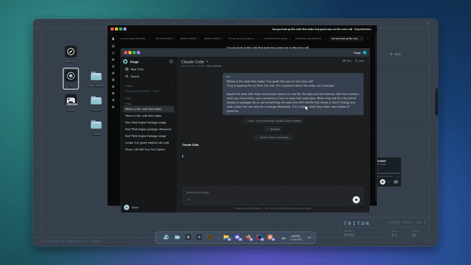

Triton · Upcoming
Pre-Release 0.1.
The next Triton release, Prototype 156, after Prototype 155 · Build 8. This is what's coming in it.
Folder Explorer · Space MapNew

New in Pre-Release 0.1
Folder Explorer: Space Map side panel
- Right-click ▦ Space Map (in the folder toolbar, and the Space Map buttons on the Core Code page) to open the map in a snap panel beside the window. The tab's own view doesn't change.
- The panel adds an aqua button to the title bar to hide or show it. Both stay until you press the panel's red close button, which also stops the map's scan.
- Right-clicking another folder's Space Map swaps the map in the same panel (one per window).
- Double-click a folder in the side map to open it in the tab. Files open with their system app.
- Left-click on Space Map works as before.
Troy · Dramatic ActionNewOptional

New in Pre-Release 0.1 · Optional
Troy: Dramatic Action
An optional feature for Troy. While Troy performs an action, such as an Atlas query, Dramatic Action shows his process in a terminal as it happens.
For app developers
SnapPanel
- New optional
setCloseDisposes(true): the red close button disposes the panel and removes its aqua button, instead of hiding it. It's off by default, so the Forge, Volume and Meridian panels still just hide. - New
close()method. - Closing a panel now only unregisters that panel, so a newer panel for the same window stays registered.
In Pre-Release 0.1
Fixes
- Twilio call fixes (receiving calls)
Side projects
Triton Lab
Experiments that aren't part of a release yet, like the Media Player's Feed Analytic Framework, are in Triton Lab. They may merge into Triton at some point, or they may not.